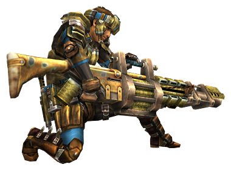
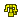
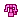
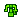
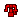

重弩
出自多玩《怪物獵人P3》數據庫
 武器：太刀 - 大劍 - 片手劍 - 斬擊斧 - 雙刀 - 錘子 - 長槍 - 銃槍 - 狩獵笛 - 弓 - 輕弩 - 重弩
武器：太刀 - 大劍 - 片手劍 - 斬擊斧 - 雙刀 - 錘子 - 長槍 - 銃槍 - 狩獵笛 - 弓 - 輕弩 - 重弩
|  |
|
註：
1，蹲射(裝填數)一列中，前面的數值代表該武器蹲射可以使用的子彈型別及彈數。
2，一般、狀態、屬性等彈後面的數值（4/4/-）分別對應每個LV等級的彈藥數量，比如通4/4/-，就代表這個弩最大可以上4發LV1通常彈、
4發LV2通常彈、不能上LV3通常彈
3，彈藥縮寫對照：
通：通常彈 貫：貫通彈 散：散彈 徹：穿甲榴彈
擴：擴散彈 回：回覆彈 毒：毒彈 麻：麻痹彈
睡：睡眠彈 減：減氣彈 滅龍：滅龍彈
4，武器名稱前的小圖示     分別代表稀有度1-7
武器派生
古結云派生系
| 名稱 | 攻擊 | 蹲射(裝填數) | 彈 | 效果 | 孔 | 等級 | |||||||
| 一般 | 狀態 | 屬性 | 特殊 | ||||||||||
| 古結云重弩 │ │ | 50 | 通常彈 Lv1(30) | 通 貫 散 徹 擴 | 4/4/- -/-/- 2/-/- -/-/- -/-/- | 回 毒 麻 睡 減 | -/- 2/- -/- -/- -/- | 火 水 雷 冰 龍 | - - - - - | 捕 染 鬼 硬 斬 | 2 2 - - - | - | --- | 下位 |
| │ │ └ 結云重弩 │ │ | 80 | 通常彈 Lv1(30) | 通 貫 散 徹 擴 | 4/5/- 2/-/- 3/-/- -/-/- -/-/- | 回 毒 麻 睡 減 | 2/- 2/- -/- -/- 2/- | 火 水 雷 冰 龍 | - - - - - | 捕 染 鬼 硬 斬 | 2 2 - - - | - | --- | 下位 |
| │ │ └ 結云重弩改 │ │ | 100 | 通常彈 Lv1(30) | 通 貫 散 徹 擴 | 5/5/- 2/-/- 3/-/- 1/-/- -/-/- | 回 毒 麻 睡 減 | 2/- 2/- 2/- -/- 2/- | 火 水 雷 冰 龍 | - - - - - | 捕 染 鬼 硬 斬 | 2 2 - - - | - | --- | 下位 |
| │ │ ├ 青熊筒 │ │ │ │ | 120 | 散彈 Lv1(20) | 通 貫 散 徹 擴 | 5/4/- 2/-/- 3/3/- 1/-/- -/-/- | 回 毒 麻 睡 減 | 2/- -/- 2/- -/- 3/1 | 火 水 雷 冰 龍 | 2 - - - - | 捕 染 鬼 硬 斬 | 2 2 1 - - | 防+5 | --- | 下位 |
| │ │ │ │ │ └ 青熊筒改 │ │ │ │ | 150 | 散彈 Lv1(20) 麻痹彈 Lv1(6) | 通 貫 散 徹 擴 | 5/5/7 2/-/- 3/4/- 2/-/- -/-/- | 回 毒 麻 睡 減 | 2/- -/- 2/1 -/- 3/1 | 火 水 雷 冰 龍 | 3 - - - - | 捕 染 鬼 硬 斬 | 2 2 1 - - | 防+10 | --- | 下位 |
| │ │ │ │ │ └ 青熊轟筒 │ │ │ │ | 200 | 散彈 Lv1(20) 麻痹彈 Lv1(6) 減氣彈 Lv2(4) | 通 貫 散 徹 擴 | 5/6/8 2/-/- 3/4/- 2/-/- -/-/- | 回 毒 麻 睡 減 | 2/- -/- 2/1 -/- 3/2 | 火 水 雷 冰 龍 | 3 - - - - | 捕 染 鬼 硬 斬 | 2 2 1 - - | 防+20 | --- | 上位 |
| │ │ │ │ │ └ 青熊轟筒【川漁】 │ │ | 210 | 散彈 Lv1(20) 麻痹彈 Lv1(6) 減氣彈 Lv2(4) | 通 貫 散 徹 擴 | 5/7/8 2/-/- 4/5/- 2/-/- -/-/- | 回 毒 麻 睡 減 | 2/- -/- 2/1 -/- 3/2 | 火 水 雷 冰 龍 | 3 - - - - | 捕 染 鬼 硬 斬 | 2 2 1 - - | 防+24 | --- | 上位 |
| │ │ ├ 白兔射擊手 │ │ │ │ | 140 | 冰結彈(20) | 通 貫 散 徹 擴 | 4/3/- 3/3/- -/-/- -/-/- -/-/- | 回 毒 麻 睡 減 | 2/- -/- -/- 2/- -/- | 火 水 雷 冰 龍 | - 2 - 3 - | 捕 染 鬼 硬 斬 | 2 2 - - - | - | --- | 下位 |
| │ │ │ │ │ └ 白兔重炮手 │ │ │ │ | 160 | 貫通彈 Lv2(20) 冰結彈(20) | 通 貫 散 徹 擴 | 4/4/- 3/4/- -/-/- -/-/- -/-/- | 回 毒 麻 睡 減 | 2/- -/- -/- 2/1 -/- | 火 水 雷 冰 龍 | - 3 - 4 - | 捕 染 鬼 硬 斬 | 2 2 - - - | 會心10% | --- | 下位 |
| │ │ │ │ │ └ 白兔重炮王 │ │ │ │ | 170 | 貫通彈 Lv2(20) 貫通彈 Lv3(？) 冰結彈(？) | 通 貫 散 徹 擴 | 5/5/- 4/4/5 -/-/- -/-/- -/-/- | 回 毒 麻 睡 減 | 2/- -/- -/- 2/1 -/- | 火 水 雷 冰 龍 | - 3 - 4 - | 捕 染 鬼 硬 斬 | 2 2 - - - | 會心10% | --- | 上位 |
| │ │ │ │ │ └ 白兔凱撒弩 │ │ | 190 | 貫通彈 Lv2(？) 貫通彈 Lv3(？) 冰結彈(？) | 通 貫 散 徹 擴 | 5/5/- 5/5/6 -/-/- -/-/- -/-/- | 回 毒 麻 睡 減 | 2/- -/- -/- 2/1 -/- | 火 水 雷 冰 龍 | - 3 - 5 - | 捕 染 鬼 硬 斬 | 2 2 - - - | 會心20% | --- | 上位 |
| │ │ └ 妃龍炮【遠擊】 │ │ | 150 | 火炎彈(20) 毒彈 Lv1(6) | 通 貫 散 徹 擴 | 6/7/8 2/-/- 2/-/- -/-/- 1/1/- | 回 毒 麻 睡 減 | 2/- 3/2 -/- -/- 2/- | 火 水 雷 冰 龍 | 3 - - - - | 捕 染 鬼 硬 斬 | 2 2 1 - 2 | - | --- | 下位 |
| │ │ └ 妃龍炮【飛擊】 │ │ | 170 | 火炎彈(20) 毒彈 Lv1(6) | 通 貫 散 徹 擴 | 7/8/8 3/-/- 2/-/- -/-/- 1/1/- | 回 毒 麻 睡 減 | 2/- 3/2 -/- -/- 2/- | 火 水 雷 冰 龍 | 3 - - - - | 捕 染 鬼 硬 斬 | 2 2 1 - 2 | - | O-- | 下位 |
| │ │ └ 妃龍炮【姫擊】 │ │ | 200 | 火炎彈(？) 毒彈 Lv2(？) | 通 貫 散 徹 擴 | 7/8/9 3/-/- 2/-/- -/-/- 1/1/- | 回 毒 麻 睡 減 | 2/- 4/2 -/- -/- 2/- | 火 水 雷 冰 龍 | 4 - - - - | 捕 染 鬼 硬 斬 | 2 2 1 - 2 | - | OO- | 上位 |
| │ │ └ 妃龍炮【神擊】 | 220 | 貫通彈 Lv1(？) 火炎彈(？) 毒彈 Lv2(？) | 通 貫 散 徹 擴 | 7/9/10 3/-/- 2/-/- -/-/- 1/1/- | 回 毒 麻 睡 減 | 2/- 4/2 -/- -/- 2/- | 火 水 雷 冰 龍 | 4 - - - - | 捕 染 鬼 硬 斬 | 2 2 1 - 2 | - | OOO | 上位 |
骨射手派生系
| 名稱 | 攻擊 | 蹲射(裝填數) | 彈 | 效果 | 孔 | 等級 | |||||||
| 一般 | 狀態 | 屬性 | 特殊 | ||||||||||
| 骨射手 │ │ | 90 | 通常彈 Lv1(30) | 通 貫 散 徹 擴 | 5/4/- 2/-/- 3/-/- -/-/- -/-/- | 回 毒 麻 睡 減 | -/1 -/- -/- -/- -/- | 火 水 雷 冰 龍 | - 3 - - - | 捕 染 鬼 硬 斬 | 2 2 - 1 - | - | --- | 下位 |
| │ │ └ 骨射手改 │ │ | 100 | 通常彈 Lv1(30) | 通 貫 散 徹 擴 | 5/4/4 2/-/- 4/-/- -/-/- -/-/- | 回 毒 麻 睡 減 | -/1 -/- -/- -/- -/- | 火 水 雷 冰 龍 | - - 3 - - | 捕 染 鬼 硬 斬 | 2 2 - 1 2 | - | O-- | 下位 |
| │ │ └ 骨爆裂者 │ │ | 110 | 通常彈 Lv1(30) | 通 貫 散 徹 擴 | 6/4/5 2/-/- 4/-/- -/-/- 1/-/- | 回 毒 麻 睡 減 | -/1 -/- -/- -/- -/- | 火 水 雷 冰 龍 | - 3 - - - | 捕 染 鬼 硬 斬 | 2 2 - 1 2 | - | O-- | 下位 |
| │ │ ├ 彩鳥重弩 │ │ │ │ | 130 | 散彈 Lv1(20) 火炎彈(20) | 通 貫 散 徹 擴 | 4/5/6 -/-/- 4/4/- -/-/- 1/-/- | 回 毒 麻 睡 減 | 3/1 -/- -/- -/- -/- | 火 水 雷 冰 龍 | 3 - - - - | 捕 染 鬼 硬 斬 | 2 2 1 1 - | - | O-- | 下位 |
| │ │ │ │ │ └ 彩鳥重弩·彩 │ │ │ │ | 140 | 散彈 Lv1(20) 火炎彈(20) | 通 貫 散 徹 擴 | 5/6/7 -/-/- 4/4/- -/-/- 1/1/- | 回 毒 麻 睡 減 | 3/2 -/- -/- -/- -/- | 火 水 雷 冰 龍 | 4 - - - - | 捕 染 鬼 硬 斬 | 2 2 1 1 - | - | O-- | 下位 |
| │ │ │ │ │ └ 大彩鳥重炮 │ │ │ │ | 160 | 散彈 Lv1(？) 火炎彈(？) | 通 貫 散 徹 擴 | 5/7/8 -/-/- 4/5/- -/-/- 2/1/- | 回 毒 麻 睡 減 | 3/2 -/- -/- -/- -/- | 火 水 雷 冰 龍 | 4 - - - - | 捕 染 鬼 硬 斬 | 2 2 1 1 - | 會心10% | OO- | 下位 |
| │ │ │ │ │ └ 彩鳥閃電重弩 │ │ │ │ | 190 | 散彈 Lv1(？) 火炎彈(？) 電擊彈(？) | 通 貫 散 徹 擴 | 5/7/8 -/-/- 5/5/6 -/-/- 2/1/- | 回 毒 麻 睡 減 | 3/2 -/- 2/- 2/- -/- | 火 水 雷 冰 龍 | 4 - -4 - - | 捕 染 鬼 硬 斬 | 2 2 1 1 - | 會心10% | OO- | 上位 |
| │ │ │ │ │ └ 巨鳥嘴 │ │ | 210 | 散彈 Lv1(？) 火炎彈(？) 電擊彈(？) | 通 貫 散 徹 擴 | 6/7/9 -/-/- 5/6/6 -/-/- 2/1/- | 回 毒 麻 睡 減 | 3/3 -/- 2/- 2/- -/- | 火 水 雷 冰 龍 | 4 - 4 - - | 捕 染 鬼 硬 斬 | 2 2 1 1 - | 會心15% | OO- | 上位 |
| │ │ └ 46式潛伏重炮Ⅰ │ │ | 140 | 通常彈 Lv3(30) 水冷彈(20) | 通 貫 散 徹 擴 | 5/4/6 2/3/- 2/-/- -/-/- -/-/- | 回 毒 麻 睡 減 | -/- 2/- 2/- -/- 2/1 | 火 水 雷 冰 龍 | - 4 - - - | 捕 染 鬼 硬 斬 | 2 2 - - 2 | 防+8 | --- | 下位 |
| │ │ └ 46式潛伏重炮Ⅱ │ │ | 160 | 通常彈 Lv3(30) 水冷彈(20) | 通 貫 散 徹 擴 | 6/5/7 3/3/- 2/-/- -/-/- -/-/- | 回 毒 麻 睡 減 | -/- 2/- 2/- -/- 2/2 | 火 水 雷 冰 龍 | - 4 - - - | 捕 染 鬼 硬 斬 | 2 2 - - 2 | 防+16 | O-- | 下位 |
| │ │ └ 46式潛伏重炮Ⅲ │ │ | 180 | 通常彈 Lv3(30) 水冷彈(20) | 通 貫 散 徹 擴 | 7/6/8 3/3/- 3/-/- -/-/- -/-/- | 回 毒 麻 睡 減 | -/- 2/1 2/- -/- 2/2 | 火 水 雷 冰 龍 | - 5 - - - | 捕 染 鬼 硬 斬 | 2 2 - - 2 | 防+18 | O-- | 上位 |
| │ │ └ 潛炮潛口砂 | 200 | 通常彈 Lv3(30) 水冷彈(20) 毒彈 Lv1(？) | 通 貫 散 徹 擴 | 7/7/10 3/3/- 3/-/- -/-/- -/-/- | 回 毒 麻 睡 減 | -/- 2/1 2/- -/- 2/2 | 火 水 雷 冰 龍 | - 5 - - - | 捕 染 鬼 硬 斬 | 2 2 - - 2 | 防+20 | O-- | 上位 |
炎戈重弩派生系
| 名稱 | 攻擊 | 蹲射(裝填數) | 彈 | 效果 | 孔 | 等級 | |||||||
| 一般 | 狀態 | 屬性 | 特殊 | ||||||||||
炎戈重弩 │ │ | 160 | 火炎彈(?) | 通 貫 散 徹 擴 | 5/6/7 3/3/- -/2/- -/1/- -/1/- | 回 毒 麻 睡 減 | 2/1 2/- 1/- -/- -/- | 火 水 雷 冰 龍 | 5 - - - - | 捕 染 鬼 硬 斬 | 2 2 - 1 - | - | --- | 下位 |
| │ │ └ 炎戈爆裂者 │ │ | 190 | LV2徹甲榴弾(?) 火炎彈(?) | 通 貫 散 徹 擴 | 5/6/7 3/3/- -/2/- -/1/- -/1/- | 回 毒 麻 睡 減 | 2/1 2/- 1/- -/- -/- | 火 水 雷 冰 龍 | 5 - - - - | 捕 染 鬼 硬 斬 | 2 2 - 1 - | - | --- | 上位 |
| │ │ ├ 炎戈銃紅蓮破雨 │ │ | 200 | LV2徹甲榴弾(?) 火炎彈(?) | 通 貫 散 徹 擴 | 5/7/7 4/4/5 -/2/- -/1/- -/1/- | 回 毒 麻 睡 減 | 2/1 2/- 1/- -/- -/- | 火 水 雷 冰 龍 | 5 - - - - | 捕 染 鬼 硬 斬 | 2 2 - 1 - | - | --- | 上位 |
| │ │ └ 凍戈銃鴻海凍息 | 200 | 水冷彈(?) 冰潔彈(?) | 通 貫 散 徹 擴 | 5/6/7 5/4/5 -/2/- -/-/- -/-/- | 回 毒 麻 睡 減 | 2/1 2/- -/- -/- -/- | 火 水 雷 冰 龍 | - 5 - 3 - | 捕 染 鬼 硬 斬 | 2 2 - 1 - | - | --- | 上位 |
決鬥重弩派生系
| 名稱 | 攻擊 | 蹲射(裝填數) | 彈 | 效果 | 孔 | 等級 | |||||||
| 一般 | 狀態 | 屬性 | 特殊 | ||||||||||
決鬥重弩 │ │ | 180 | 通常彈 Lv2(30) 通常彈 Lv3(30) 貫通彈 Lv1(20) | 通 貫 散 徹 擴 | 3/3/3 2/3/3 -/-/- -/-/- -/-/- | 回 毒 麻 睡 減 | -/- -/- -/- -/- 2/1 | 火 水 雷 冰 龍 | - - - - - | 捕 染 鬼 硬 斬 | 2 2 - - - | 會心-15% | --- | 下位 |
| │ │ └ 決鬥重弩改 │ │ | 200 | 通常彈 Lv2(?) 通常彈 Lv3(?) 貫通彈 Lv1(?) 貫通彈 Lv2(?) | 通 貫 散 徹 擴 | 3/3/3 3/3/3 -/-/- -/-/- -/-/- | 回 毒 麻 睡 減 | -/- -/- -/- -/- 2/1 | 火 水 雷 冰 龍 | - - - - - | 捕 染 鬼 硬 斬 | 2 2 - - - | 會心-15% | --- | 上位 |
| │ │ ├ 黑虎槍 │ │ | 240 | 通常彈 Lv1(?) 通常彈 Lv2(?) 通常彈 Lv3(?) | 通 貫 散 徹 擴 | 1/1/1 5/4/4 2/2/3 -/-/- -/-/- | 回 毒 麻 睡 減 | -/- -/- -/- -/- 3/1 | 火 水 雷 冰 龍 | - - - - - | 捕 染 鬼 硬 斬 | 2 2 - - - | 會心-10% | --- | 上位 |
| │ │ └ 重虎槍 | 230 | 通常彈 Lv2(?) 通常彈 Lv3(?) 貫通彈 Lv1(?) 貫通彈 Lv2(?) 貫通彈 Lv3(?) | 通 貫 散 徹 擴 | 3/3/3 3/3/3 -/-/- -/-/- -/-/- | 回 毒 麻 睡 減 | -/- -/- -/- -/- 2/2 | 火 水 雷 冰 龍 | - - - - - | 捕 染 鬼 硬 斬 | 2 2 - - - | 會心-25% | --- | 上位 |
迅影狙擊者派生系
| 名稱 | 攻擊 | 蹲射(裝填數) | 彈 | 效果 | 孔 | 等級 | |||||||
| 一般 | 狀態 | 屬性 | 特殊 | ||||||||||
迅影狙擊者 │ │ | 130 | 貫通彈 Lv2(20) 斬裂彈(5) | 通 貫 散 徹 擴 | 4/4/- 4/4/4 -/-/- 2/-/- -/-/- | 回 毒 麻 睡 減 | -/1 -/- -/- -/- 2/1 | 火 水 雷 冰 龍 | - - - - - | 捕 染 鬼 硬 斬 | 2 2 1 - 3 | 會心40% | --- | 下位 |
| │ │ └ 夜炮【黑風】 │ │ | 170 | 貫通彈 Lv2(20) 貫通彈 Lv3(20) 斬裂彈(5) | 通 貫 散 徹 擴 | 4/4/- 4/4/4 -/-/- 2/-/- -/-/- | 回 毒 麻 睡 減 | -/1 -/- -/- -/- 2/1 | 火 水 雷 冰 龍 | - - - - - | 捕 染 鬼 硬 斬 | 2 2 1 - 3 | 會心40% | --- | 上位 |
| │ │ └ 暗綠狙擊者 │ │ | 180 | 貫通彈 Lv2(?) 貫通彈 Lv3(?) 斬裂彈(?) 減氣彈 Lv1(?) | 通 貫 散 徹 擴 | 4/4/- 4/4/4 -/-/- 2/-/- -/-/- | 回 毒 麻 睡 減 | -/1 -/- -/- -/- 3/2 | 火 水 雷 冰 龍 | - - - - - | 捕 染 鬼 硬 斬 | 2 2 1 - 3 | 會心40% | O-- | 上位 |
| │ │ └ 烈風炮【里黑風】 | 190 | 貫通彈 Lv2(?) 貫通彈 Lv3(?) 斬裂彈(?) 減氣彈 Lv1(?) | 通 貫 散 徹 擴 | 4/5/- 5/5/5 -/-/- 2/-/- -/-/- | 回 毒 麻 睡 減 | -/1 -/- -/- -/- 3/2 | 火 水 雷 冰 龍 | - - - - - | 捕 染 鬼 硬 斬 | 2 2 1 - 3 | 會心50% | O-- | 上位 |
礦石結晶新星派生系
| 名稱 | 攻擊 | 蹲射(裝填數) | 彈 | 效果 | 孔 | 等級 | |||||||
| 一般 | 狀態 | 屬性 | 特殊 | ||||||||||
礦石結晶新星 │ │ | 120 | 斬裂彈(5) | 通 貫 散 徹 擴 | 4/5/- 3/3/- -/-/- 2/2/- -/-/- | 回 毒 麻 睡 減 | -/- -/- 2/- -/- 2/- | 火 水 雷 冰 龍 | - - 3 - 2 | 捕 染 鬼 硬 斬 | 2 2 - - 3 | - | O-- | 下位 |
| │ │ └ 流星巨炮 │ │ | 140 | 貫通彈 Lv2(20) 斬裂彈(5) | 通 貫 散 徹 擴 | 5/5/- 3/4/- -/-/- 2/2/- -/1/- | 回 毒 麻 睡 減 | -/- -/- 2/- -/- 2/- | 火 水 雷 冰 龍 | - - 3 - 2 | 捕 染 鬼 硬 斬 | 2 2 - - 3 | - | O-- | 下位 |
| │ │ └ 星痕光璃炮 | 200 | 貫通彈 Lv2(?) 擴散彈 Lv2(?) 斬裂彈(?) | 通 貫 散 徹 擴 | 5/6/- 3/4/- -/-/- 2/2/- -/1/- | 回 毒 麻 睡 減 | -/1 -/- 2/- -/- 2/- | 火 水 雷 冰 龍 | - - 3 - 3 | 捕 染 鬼 硬 斬 | 2 2 - - 3 | - | OO- | 上位 |
大南瓜槍派生系
| 名稱 | 攻擊 | 蹲射(裝填數) | 彈 | 效果 | 孔 | 等級 | |||||||
| 一般 | 狀態 | 屬性 | 特殊 | ||||||||||
大南瓜槍 │ │ | 120 | 通常彈 Lv3(30) 睡眠彈 Lv1(6) | 通 貫 散 徹 擴 | 5/5/5 2/-/- 3/4/- 1/-/- 1/-/- | 回 毒 麻 睡 減 | 2/1 -/- 2/- 2/1 2/1 | 火 水 雷 冰 龍 | - 3 - - - | 捕 染 鬼 硬 斬 | 2 2 1 - - | - | OO- | 下位 |
| │ │ └ 皇后巨炮 │ │ | 150 | 通常彈 Lv3(30) 睡眠彈 Lv1(6) | 通 貫 散 徹 擴 | 6/6/6 2/-/- 4/4/- 2/-/- 1/-/- | 回 毒 麻 睡 減 | 2/1 -/- 2/- 3/2 2/2 | 火 水 雷 冰 龍 | - 3 - - - | 捕 染 鬼 硬 斬 | 2 2 1 - - | - | OO- | 下位 |
| │ │ └ 沙塵爆裂者 | 200 | 通常彈 Lv3(?) 睡眠彈 Lv2(?) | 通 貫 散 徹 擴 | 8/8/8 3/-/- 4/4/- 2/-/- 1/-/- | 回 毒 麻 睡 減 | 2/1 -/- 2/- 3/2 2/2 | 火 水 雷 冰 龍 | - 3 - - - | 捕 染 鬼 硬 斬 | 2 2 1 - - | - | OOO | 上位 |
海造炮【火刃】派生系
| 名稱 | 攻擊 | 蹲射(裝填數) | 彈 | 效果 | 孔 | 等級 | |||||||
| 一般 | 狀態 | 屬性 | 特殊 | ||||||||||
海造炮【火刃】 │ │ | 160 | 徹甲榴彈 Lv1(9) 徹甲榴彈 Lv2(9) | 通 貫 散 徹 擴 | 5/5/- -/3/- 2/2/- 1/1/1 3/3/3 | 回 毒 麻 睡 減 | -/- -/- -/- -/- -/- | 火 水 雷 冰 龍 | - - 3 - - | 捕 染 鬼 硬 斬 | 2 2 - 1 2 | 會心15% | --- | 下位 |
| │ │ └ 海造炮【炎刃】 │ │ | 180 | 徹甲榴彈 Lv1(9) 徹甲榴彈 Lv2(9) 徹甲榴彈 Lv3(9) | 通 貫 散 徹 擴 | 5/5/- -/3/- 2/2/- 1/1/1 3/3/3 | 回 毒 麻 睡 減 | -/- -/- -/- -/- -/- | 火 水 雷 冰 龍 | - - 3 - - | 捕 染 鬼 硬 斬 | 2 2 - 1 2 | 會心15% | --- | 上位 |
| │ │ └ 海造炮【灰燼】 | 210 | 徹甲榴彈 Lv1(?) 徹甲榴彈 Lv2(?) 徹甲榴彈 Lv3(?) | 通 貫 散 徹 擴 | 5/5/- -/3/- 3/3/- 2/2/2 3/3/3 | 回 毒 麻 睡 減 | -/- -/- -/- -/- -/- | 火 水 雷 冰 龍 | - - 3 - - | 捕 染 鬼 硬 斬 | 2 2 - 1 2 | 會心15% | --- | 上位 |
轟龍咆哮派生系
| 名稱 | 攻擊 | 蹲射(裝填數) | 彈 | 效果 | 孔 | 等級 | |||||||
| 一般 | 狀態 | 屬性 | 特殊 | ||||||||||
轟龍咆哮 │ │ | 170 | Lv3 通常彈(?) Lv1 徹甲榴彈(?) Lv1 擴散彈(?) | 通 貫 散 徹 擴 | 7/7/8 -/-/3 -/-/3 3/3/3 1/1/1 | 回 毒 麻 睡 減 | -/- 2/- -/- 2/- -/- | 火 水 雷 冰 龍 | - - - 3 1 | 捕 染 鬼 硬 斬 | 2 2 1 - - | 會心-20% | O-- | 下位 |
| │ │ └ 轟龍咆哮改 │ │ | 210 | Lv3 通常彈(?) Lv1 徹甲榴彈(?) Lv1 擴散彈(?) | 通 貫 散 徹 擴 | 7/8/9 -/-/3 -/-/3 3/3/3 1/1/1 | 回 毒 麻 睡 減 | -/- 2/- -/- 2/- -/- | 火 水 雷 冰 龍 | - - - 3 1 | 捕 染 鬼 硬 斬 | 2 2 1 - - | 會心-20% | O-- | 上位 |
| │ │ └ 轟炮【虎頭】 | 230 | Lv3 通常彈(?) Lv1 徹甲榴彈(?) Lv2 擴散彈(?) | 通 貫 散 徹 擴 | 7/8/10 -/-/3 -/-/3 3/3/3 1/1/1 | 回 毒 麻 睡 減 | -/- 2/- -/- 2/- -/- | 火 水 雷 冰 龍 | - - - 3 1 | 捕 染 鬼 硬 斬 | 2 2 1 - - | 會心-20% | OO- | 上位 |
峯山大炮派生系
| 名稱 | 攻擊 | 蹲射(裝填數) | 彈 | 效果 | 孔 | 等級 | |||||||
| 一般 | 狀態 | 屬性 | 特殊 | ||||||||||
峯山大炮 │ │ | 170 | 水冷彈(20) 減氣彈 Lv1(6) | 通 貫 散 徹 擴 | 5/6/7 -/3/4 -/3/4 -/2/- -/-/- | 回 毒 麻 睡 減 | 2/1 -/- -/- -/- 2/2 | 火 水 雷 冰 龍 | 2 3 2 - - | 捕 染 鬼 硬 斬 | 2 2 - - - | 防+16 | O-- | 下位 |
| │ │ └ 峯山龍炮 │ │ | 200 | 貫通彈 Lv3(20) 水冷彈(20) 減氣彈 Lv1(6) | 通 貫 散 徹 擴 | 5/6/7 -/3/4 -/3/4 -/2/- -/-/- | 回 毒 麻 睡 減 | 2/1 -/- -/- -/- 2/2 | 火 水 雷 冰 龍 | 2 3 2 - - | 捕 染 鬼 硬 斬 | 2 2 - - - | 防+22 | O-- | 上位 |
| │ │ └ 峯山龍炮【富國】 | 230 | 貫通彈 Lv3(20) 水冷彈(20) 減氣彈 Lv1(6) | 通 貫 散 徹 擴 | 5/7/8 -/3/4 -/3/4 -/2/- -/-/- | 回 毒 麻 睡 減 | 2/1 -/- -/- -/- 2/2 | 火 水 雷 冰 龍 | 3 3 3 - - | 捕 染 鬼 硬 斬 | 2 2 - - - | 防+30 | O-- | 上位 |
真結云派生系
| 名稱 | 攻擊 | 蹲射(裝填數) | 彈 | 效果 | 孔 | 等級 | |||||||
| 一般 | 狀態 | 屬性 | 特殊 | ||||||||||
真結云重弩 │ │ | 160 | 通常彈 Lv3(?) 散彈 Lv1(?) | 通 貫 散 徹 擴 | 5/6/8 2/-/- 3/-/- 2/-/- 1/1/- | 回 毒 麻 睡 減 | 2/- 2/1 2/1 -/- 2/- | 火 水 雷 冰 龍 | 3 3 - - - | 捕 染 鬼 硬 斬 | 2 2 - - - | 防+10 | OO- | 下位 |
| │ │ └ 結云連山重弩 | 190 | 通常彈 Lv3(?) 貫通彈 Lv2(?) 散彈 Lv1(?) | 通 貫 散 徹 擴 | 5/6/8 3/1/- 3/-/- 3/-/- 1/1/- | 回 毒 麻 睡 減 | 2/- 2/2 2/2 -/- 2/- | 火 水 雷 冰 龍 | 3 3 - - - | 捕 染 鬼 硬 斬 | 2 2 - - - | - | OOO | 上位 |
巨人＝重弩派生系
| 名稱 | 攻擊 | 蹲射(裝填數) | 彈 | 效果 | 孔 | 等級 | |||||||
| 一般 | 狀態 | 屬性 | 特殊 | ||||||||||
巨人＝重弩 │ │ | 220 | 火炎彈(?) 冰結彈(?) 滅龍彈(?) | 通 貫 散 徹 擴 | -/8/10 -/-/3 -/-/3 -/-/1 -/-/1 | 回 毒 麻 睡 減 | -/- -/1 -/- -/- -/1 | 火 水 雷 冰 龍 | 3 - - 3 1 | 捕 染 鬼 硬 斬 | 2 2 - 1 - | 會心-10% | --- | 上位 |
| │ │ └ 巨人＝守護神 | 240 | 火炎彈(?) 冰結彈(?) 滅龍彈(?) | 通 貫 散 徹 擴 | -/8/10 -/-/3 -/-/3 -/-/1 -/-/1 | 回 毒 麻 睡 減 | -/- -/1 -/- -/- -/1 | 火 水 雷 冰 龍 | 3 - - 3 1 | 捕 染 鬼 硬 斬 | 2 2 - 1 - | 會心-10% | --- | 上位 |
靈鶴加農炮派生系
| 名稱 | 攻擊 | 蹲射(裝填數) | 彈 | 效果 | 孔 | 等級 | |||||||
| 一般 | 狀態 | 屬性 | 特殊 | ||||||||||
| 靈鶴加農炮 │ │ | 180 | 貫通彈 Lv2(?) 斬裂彈(?) | 通 貫 散 徹 擴 | 4/4/5 2/3/- 4/4/- 3/3/3 -/-/- | 回 毒 麻 睡 減 | -/1 -/1 -/1 -/1 -/1 | 火 水 雷 冰 龍 | - - - 3 2 | 捕 染 鬼 硬 斬 | 2 2 1 2 2 | - | OO- | 上位 |
| │ │ └ 流星加農炮 | 210 | 貫通彈 Lv2(?) 冰結彈(?) 斬裂彈(?) | 通 貫 散 徹 擴 | 4/5/7 3/3/- 4/4/- 3/3/3 -/-/- | 回 毒 麻 睡 減 | -/1 -/1 -/1 -/1 -/1 | 火 水 雷 冰 龍 | - - 2 2 2 | 捕 染 鬼 硬 斬 | 2 2 1 1 2 | - | OOO | 上位 |
王炮派生系
| 名稱 | 攻擊 | 蹲射(裝填數) | 彈 | 效果 | 孔 | 等級 | |||||||
| 一般 | 狀態 | 屬性 | 特殊 | ||||||||||
| 王炮光芒 │ │ | 160 175 | 電擊彈(20) 斬裂彈(5) 麻痹彈 Lv1(6) | 通 貫 散 徹 擴 | 5/6/- 3/3/- 2/3/- -/-/- -/-/- | 回 毒 麻 睡 減 | -/- -/- 2/1 -/- -/- | 火 水 雷 冰 龍 | - - 4 - - | 捕 染 鬼 硬 斬 | 2 2 - 1 3 | 會心10% | --- | 下位 |
| │ │ └ 王牙炮【山雷】 | 220 | 電擊彈(?) 斬裂彈(?) 麻痹彈 Lv1(?) | 通 貫 散 徹 擴 | 5/7/- 3/3/- 2/3/- -/-/- -/-/- | 回 毒 麻 睡 減 | -/- -/- 2/1 -/- -/- | 火 水 雷 冰 龍 | - - 5 - - | 捕 染 鬼 硬 斬 | 2 2 - 1 4 | 會心10% | --- | 上位 |
無派生系
| 名稱 | 攻擊 | 蹲射(裝填數) | 彈 | 效果 | 孔 | 等級 | |||||||
| 一般 | 狀態 | 屬性 | 特殊 | ||||||||||
覇炮·黯鎧黃昏 | 220 | Lv2通常彈(30) LV3通常彈(30) LV1貫通彈(20) LV3徹甲榴彈(9) | 通 貫 散 徹 擴 | 4/4/5 2/3/3 2/-/- 1/1/1 1/1/1 | 回 毒 麻 睡 減 | -/- -/- -/- -/- -/- | 火 水 雷 冰 龍 | 2 - - - 2 | 捕 染 鬼 硬 斬 | 2 2 1 - 2 | 會心40% | --- | 上位 |
崩炮·啟示雪淚 | 260 | Lv2擴散彈(?) 冰結彈(20) | 通 貫 散 徹 擴 | 6/8/12 2/-/- 4/5/6 -/-/- 2/1/2 | 回 毒 麻 睡 減 | 3/2 -/- -/- 3/2 3/2 | 火 水 雷 冰 龍 | - 4 - 5 2 | 捕 染 鬼 硬 斬 | 2 2 - 1 3 | 會心-30% | --- | 上位 |
煌黑炮·混凌翼 | 220 | 火炎彈(20) 水冷彈(20) 電擊彈(20) 冰結彈(20) | 通 貫 散 徹 擴 | 5/6/7 -/3/4 -/3/4 -/-/- -/-/- | 回 毒 麻 睡 減 | -/- -/- 2/1 -/- -/- | 火 水 雷 冰 龍 | 3 3 3 3 2 | 捕 染 鬼 硬 斬 | 2 2 1 1 - | - | OO- | 上位 |
兇刻【時雨】 | 230 | Lv2 貫通彈(?) Lv2 散彈(?) 水冷彈(?) Lv2 麻痹彈(?) | 通 貫 散 徹 擴 | 7/8/10 2/2/3 -/3/- 1/1/1 -/-/- | 回 毒 麻 睡 減 | -/2 -/2 -/1 -/1 -/2 | 火 水 雷 冰 龍 | - 3 3 - - | 捕 染 鬼 硬 斬 | 2 2 - - - | 會心-5% | O-- | 上位 |
重弩攻略心得
圖文
| · | >>更多 |
視訊
| · | >>更多 |
武器：太刀 - 大劍 - 片手劍 - 斬擊斧 - 雙刀 - 錘子 - 長槍 - 銃槍 - 狩獵笛 - 弓 - 輕弩 - 重弩